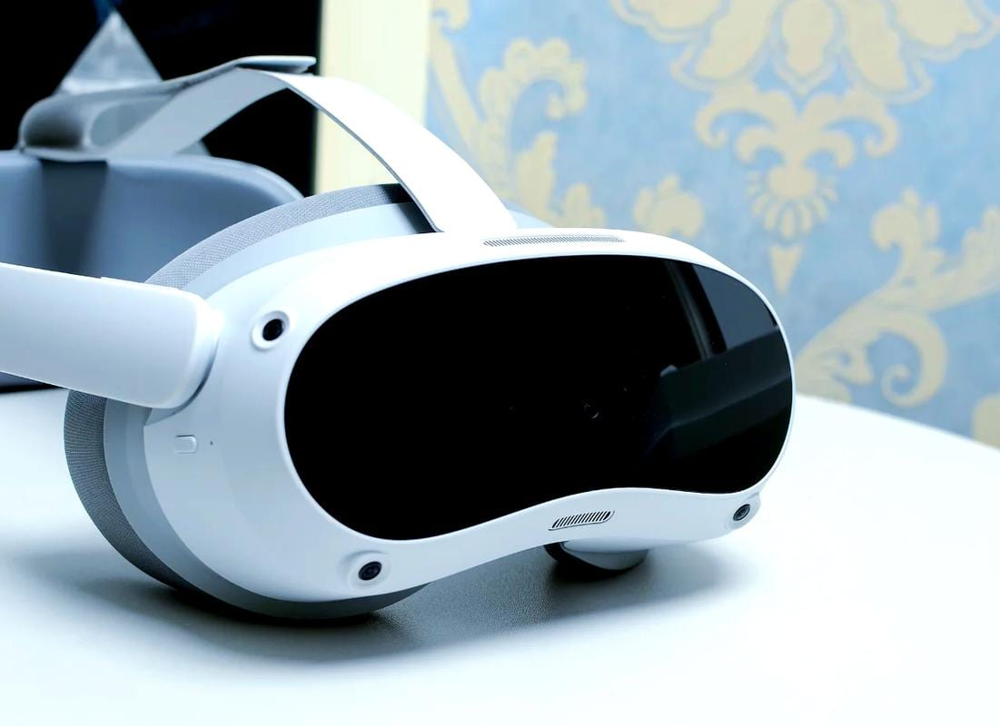

PICO 4 VR 一体机

PICO 4 采用 Pancake 折叠光路，主机轻至约 295 克，前后配重平衡佩戴舒适。彩色透视、6DoF 手柄与丰富的国行内容生态，本地化服务与售后便利，是国行 VR 一体机中性价比较高的选择。
客观评测
PICO 4 是国行 VR 一体机的代表作：Pancake 折叠光路带来轻薄机身，主机约 295 克、前后配重设计减轻面部压迫。骁龙 XR2 Gen 1 平台性能满足主流一体机游戏，单眼约 2160×2160 分辨率（约数）显示清晰。支持彩色透视但清晰度一般，MR 应用体验有限。6DoF 手柄追踪稳定，可串流 PC 玩 Steam VR 游戏。国行版本的本地化账号服务、应用商店与售后是相对海外产品的差异化优势，内容生态规模则仍落后于 Quest。
主观点评
它最舒服的是戴上那一刻的轻盈感，玩半小时 VR 健身也不会满头压痕，国内账号注册、支付、售后一路顺畅，对不想折腾海外服务的用户是大优点。但玩大型游戏时画质与内容比 Quest 逊色一筹，透视看真实世界像是隔了层雾。作为入门到进阶的国行头显，它是省心之选。
优点与不足
- 主机约 295 克，前后配重平衡久戴不累
- 国行本地化服务与售后省心
- Pancake 光学轻薄，串流 Steam VR 可玩性强
- XR2 Gen 1 性能弱于同代旗舰头显
- 彩色透视清晰度有限，MR 体验一般
- 国行商店内容数量少于 Quest 生态
参数规格
| 芯片 | 高通骁龙 XR2 Gen 1 |
|---|---|
| 显示 | LCD 双屏，单眼约 2160×2160（约数） |
| 刷新率 | 最高约 90Hz |
| 光学 | Pancake 折叠光路透镜 |
| 透视 | 彩色透视（清晰度一般） |
| 手柄 | 6DoF 光学追踪手柄 |
| 重量 | 主机约 295g（不含绑带，约数） |
| 续航 | 约 2-3 小时（视使用） |
| 存储 | 128GB / 256GB（以销售版本为准） |
| 连接 | Wi-Fi 6、USB-C 串流（约数） |
| 内容 | PICO Store 国行商店、串流 Steam VR |
| 音频 | 双扬声器，空间音频支持（约数） |